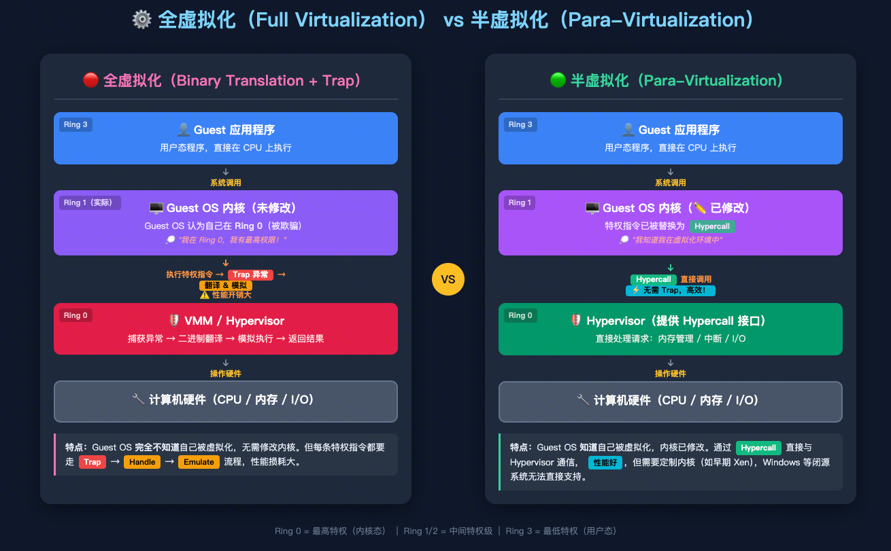

# 术语概念
-
QBR：季度商业回顾，就是周会 PLUS 版，听众是客户
-
NPS = "客户觉得你怎么样"（主观感受分）；P2S = "你干了多少活"（客观工作量分）
-
360 评估：就是 "全方位立体评价"—— 你身边所有人都来给你打分
-
EPS 部门：Enterprise Partnership & Solutions，企业合作与解决方案
-
CSM 部门：Customer Success Manager，客户成功经理
-
灰度：小范围试点
-
在技术里，TCC 就是 “分布式事务” 的一种保证方法：
- Try 阶段：先检查所有资源是否可用（比如检查账户余额够不够）
- Confirm 阶段：确认所有检查都 OK，正式执行操作（正式扣款）
- Cancel 阶段：如果任何一步出问题，回滚到之前的状态（退款）
-
变更相关名词：
- 封网期：只能看，不能改动，防止关键时间点出问题。稳定能跑压倒一切。
- 窗口期：允许做系统变更的时间段，这时候员工 ready，有问题了可以及时处理
- 熔断期：系统出问题后，自动进入的 “冷静期”
-
CLB：负载均衡器，流量进来之后 “分流”，健康检查（坏机器自动踢掉），自动扩容（加机器不用改入口），工作在网络层（IP/TCP 级别）
-
EIP：弹性公网 IP，提供稳定的公网入口地址，IP 和机器解耦
-
veFaaS：志节火焰山版 FaaS
-
信创 = 中国自己说了算的 IT 软硬件生态≈ 国产自研 + 国产可控 + 国产替代
-
proxy 和 gateway
- Proxy = 代理：简单转发，只管 “把请求递过去”，像传话筒。
- Gateway = 网关：统一入口 + 一堆管控能力，像前台 + 保安 + 调度 + 监控。
-
ES（Elasticsearch）内容搜索是基于倒排索引技术实现的分布式全文检索引擎，专门用于对海量文本数据进行快速、泛化的搜索。
-
TOS 对象存储、EBS 对象存储、文件存储：
-
TOS：通过链接 / API 分享，谁都能访问；最大优点：便宜！ 能自动把不常用的文件挪到更便宜的 "冷库"
-
EBS 块存储：只能给一台虚拟机用，别人访问不了；最大优点：** 快！稳！** 适用于操作系统、数据库
-
文件存储：多台服务器都能同时访问；最大优点：大家一起用！ 不会出现 "你改了我看不到" 的问题
-
NAS（文件存储 NAS）
特点：传统稳重，像你们公司用了多年的老牌共享盘
适合：中小型企业文件共享、Web 服务、代码仓库
优点：够用不贵
-
EFS（弹性文件存储）
特点：灵活聪明，像新时代的智能共享盘
适合：AI 训练、自动驾驶、需要弹性伸缩的场景
优点：能伸能缩，按需付费
-
vePFS（并行文件存储）
特点：性能猛兽，像专业赛车
适合：大模型训练、HPC 高性能计算、影视渲染
优点：TB/s 吞吐，千万级 IOPS
做短视频 APP 的 → TOS + 智能分层
（"哥，不常看的视频自动存便宜区，能省 70%"）
搞金融系统的 → EBS 极速型
（"大哥，比本地 SSD 还快，9 个 9 可靠性保证"）
做 AI 训练的 → vePFS 并行文件存储
（"博士，TB/s 吞吐量，千卡同时读不排队"）
传统企业 IT → EFS 文件存储
（"领导，跟您现在的共享盘一样用，还能手机访问"）
文件 vs 对象 = 文件夹操作 vs 链接分享
-
文件操作（像在电脑里操作文件夹）
打开文件夹 → 找到文件 → 双击打开 → 编辑 → 保存
整个过程你 "知道" 文件在哪个文件夹、叫什么名字、多大
-
对象操作（像在微信里发文件）
点 "+" 号 → 选文件 → 发送 → 别人收到的是个链接
整个过程你 "不知道" 文件存在服务器的哪个位置
-
-
-
-
KV Cache vs Context Cache：KV Cache 是为了让模型当下算得快；Context Cache 是为了把算好的 KV Cache 存起来，让模型下次不用重算。
-
❓ 核心误区：为什么连续对话不能自动 100% 命中缓存？
答：因为显存太贵，服务器等不起你。
你发完一句话，服务器生成回答后，为了把显存让给其他用户，会立刻清空你的缓存。
当你发下一句时，前端其实是把 “历史记录 + 新问题” 打包重发，服务器只能从头重算一遍。
-
KV Cache（底层机制：算草纸）
通俗比喻：做数学题的算草纸。
是什么：模型为了不每次都重算前面的字，把中间计算结果临时存下来。
作用范围：仅限当前这一次点击发送。生命周期极短（用完即扔），本次回答一生成完，立刻销毁。
-
Context Cache / Prompt Cache（高级功能：档案柜）
通俗比喻：厚书的精华笔记。
是什么：为了不每次都重读长文档 / 长对话，系统把算好的 KV Cache 单独存到硬盘或内存里，贴上标签。
作用范围：跨请求 / 跨用户共享。只要发来的文本开头一模一样（比如同一本 PDF），直接调出笔记，瞬间理解；生命周期较长（按需保留）**，** 可以存活几分钟到几天
-
-
GA+CEN 云企业网
- GA（Global Accelerator）是对外加速入口，负责解决 **“最后一公里”** 的问题，用户访问你服务时，就近接入（离用户最近的节点）连上云网络，而不是走公网海底跨国电缆；
- CEN（Cloud Enterprise Network）云企业网是对内打通网络，解决 **“主干道”** 的问题，提供一条跨越国家和城市的高质量、无拥堵的专属传输通道
两者配合，就能让全球各地的用户在访问你的应用时，感觉就像访问本地的网站一样顺畅，极大地降低了延迟。
-
VPC（Virtual Private Cloud）： ** 让多个云上私有网络打通，实现内网通信；** 两个 “原本隔离的局域网”，比如东京的 A 和上海的 B，可以互相访问了，可以像在同一个内网一样通信，直接访问内网 IP，不需要走公网
-
QPS 我们 CSM 一般只关注跳变，一个 query 可以包含多个问题，消耗的 token 也不同
-
不同的 context 管理
a. 透明缓存：自动的、默认开启的缓存机制，系统自动识别
b. 前缀缓存（显式缓存）：手动设置，主动标记
c. Session 缓存：会话级别的缓存，专门为多轮对话设计，自动管理整个对话历史
-
badcase 是用来给产研团队改进方向的，低级错误不需要；但是 bad case 文档（支持记录文档）要记录一切
-
"开白" 是为客户开通特定产品、功能或服务的访问权限的简称。具体来说，就是让客户能够使用处于邀测、未公开或需要权限管控的相关服务。
-
GOC（Global Operations Center）即 全球运行指挥中心 ，是稳定性保障核心团队。
# Prompt Engineering
指令优化 —> Few-shot—> COT—> Few-shot & COT
- 指令优化时需要针对客户提供收集的 case
- 最好 goodcase+badcase 数量多于 50；
- 两者都要有，good 的占比在 4-6 成；
- goodcase 多样随机化；每种 badcase 有两条及以上
- 有时 COT 和 Few-shot 会存在不可兼得指令冲突，所以得测试一下
- 将复杂任务拆解为多个简单任务
# 虚拟化原理
# x86
我们现在一般用 x86 代指 32 位架构，x64 代指 64 位架构；x64 是 x86 的 64 位升级版，向下兼容老 32 位程序。
- x86 本源最早是英特尔 8086、80386 这类 CPU 代号，后来统称：
- ✅ 传统 32 位桌面 / 服务器 CPU 架构
- ❌ 不是 86 位！纯历史命名
- x64（也叫 AMD64/x86-64） 是 AMD 在 2003 年于 x86 基础上扩展到 64 位：
- 民用 x64：AMD 发明，Intel 照搬（直接买授权、跟进兼容），全家通用；
- 当年纯原生 Intel 搞的 64 位 IA64（安腾）很失败，小众，基本绝迹
- 支持更大内存（32 位最多只用 4G 内存，64 位理论海量），运算效率更高，现在电脑 / 软件主流标配
- 现在用的电脑确实是 64 位的，但它本质上还是 x86 家族的。我们讨论虚拟化时说的 "x86"，指的是整个架构家族（包含 x64），因为 Ring 0-3 特权级机制、那些 "敏感但非特权" 的指令问题，在 32 位和 64 位模式下都存在。
x86（指令集家族）
├── IA-32（32位，俗称"x86"）
└── x86-64（64位，俗称"x64" / "AMD64"）
# 全虚拟化 VS 半虚拟化（早期）
| 全虚拟化 | 半虚拟化 | |
|---|---|---|
| Guest OS | 未修改，以为自己在 Ring 0 | 已修改，知道自己在虚拟化环境 |
| 特权指令处理 | Trap (异常捕获) → Handle (翻译) → Emulate (模拟)（慢） | Hypercall 直接调用（快） |
| VMM 位置 | Ring 0（真正的特权级） | Ring 0 |
| Guest OS 位置 | Ring 1（被降级，但 OS 不知道） | Ring 1（OS 主动配合） |
| 兼容性 | ✅ 任意 OS 无需修改 | ❌ 需要改内核源码 |
| 性能 | ❌ 较差 | ✅ 接近原生 |

在全虚拟化中，还有一种技术叫 Binary Translation（二进制翻译），可以理解为全虚拟化技术的补丁
1964 年 Popek 和 Goldberg 提出了虚拟化的经典定理：一个架构要能被完美虚拟化，所有敏感指令（sensitive instructions）都必须是特权指令（privileged instructions）。
但 x86 不满足这个条件。x86 中有大约 17 条指令是 " 敏感但非特权 " 的，不会被 trap！
所以 Binary Translation 来填坑了：
全虚拟化（软件方式）= Trap-and-Emulate + Binary Translation ↑ ↑ 处理"会Trap的"指令 处理"不会Trap的"指令 （CPU硬件机制自动触发） （VMM 提前扫描改写，软件补偿）后来 Intel 和 AMD 推出了硬件辅助虚拟化（Intel VT-x / AMD-V），让所有敏感指令都能被正确捕获，从根本上解决了这个问题
# VMM
VMM 全称 Virtual Machine Monitor，即虚拟机监控器，也常被称为 Hypervisor，是虚拟化技术的核心组件。
它是一种运行在物理主机硬件和虚拟机 (VM) 之间的中间层软件，是为了实现虚拟化引入的软件层，向下掌控实际的物理资源，也就是操作系统，向上提供标准化、隔离化的虚批以硬件平台。为了实现这一点，它截取虚拟机对物理机的访问，并重定向，让虚拟机以为自己独享整个物理资源。
# Type 1 Hypervisor：裸金属虚拟化
没有 Host OS**，VMM 自己就是 "操作系统"，独占 Ring 0**
产品如：VMware ESXi、Xen、Microsoft Hyper-V
这种方案里没有 Host OS 的概念。你用 ESXi 装服务器时会发现，开机后进入的就是一个很简陋的管理界面，它本身就是一个极度精简的 "操作系统"—— 但它的核心职责是管理虚拟机，而不是给你当桌面用。
所以我们之前讨论的 Ring 降级模型（Guest OS 放 Ring 1，VMM 放 Ring 0） 说的就是这种架构，根本不存在 "Host OS 和 VMM 抢 Ring 0" 的问题。
# Type 2 Hypervisor：宿主型虚拟化
Host OS 已经在 Ring 0，VMM 作为一个应用运行其上
这就是你日常用的 VMware Workstation、VirtualBox 的方式。你在 Windows/Linux 桌面上装一个虚拟化软件，打开窗口就能跑虚拟机。
此时，物理机的 Windows（Host OS）确实牢牢占据着 **Ring 0，**VMM 分为两部分：
- 一部分在 Ring 3 用户态程序（比如 GUI 界面，用户交互）
- 另一部分以 内核 **** 模块 / 驱动 的形式嵌入 Host OS，借用 Host OS 的 Ring 0 权限来做关键操作。
但这很别扭，因为 VMM 要依赖 Host OS，效率和隔离性都差，权限边界模糊、实现复杂。
# Intel-VT：硬件辅助虚拟化（当下）
VT-x 增加的是一个正交 **** 的、独立的维度：Root 模式 vs Non-Root 模式。它和 Ring 级别是两个独立的轴，不是在 Ring 上面再叠一层。也就是说：
│ VMX Root（VMM的世界） │ VMX Non-Root（Guest的世界）
─────────────┼───────────────────────┼───────────────────────────────────────────
Ring 0 │ VMM 内核 | Guest OS 内核
Ring 1 │ （通常不用） │ （通常不用）
Ring 2 │ （通常不用） │ （通常不用）
Ring 3 │ VMM 的用户态工具 │ Guest 应用程序
两个世界里各自都有完整的 Ring 0~3。Guest OS 在 Non-Root 模式的 Ring 0 里运行，它 "以为" 自己拥有最高权限，但 CPU 硬件知道这是 Non-Root 的 Ring 0，遇到敏感操作会自动 VM Exit 到 Root 模式。